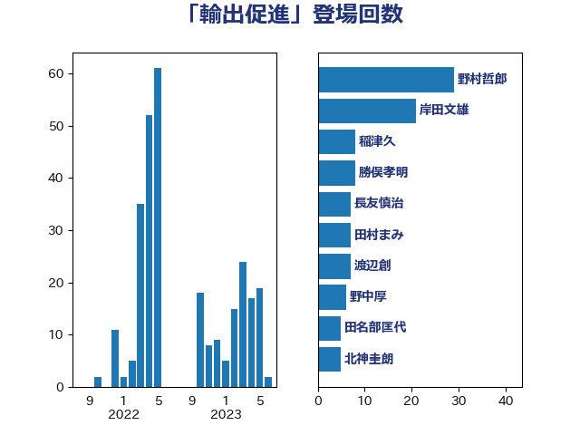

単語「輸出促進」

| 野村哲郎 | 自由民主党 | 29 回 |
| 岸田文雄 | 自由民主党 | 21 回 |
| 稲津久 | 公明党 | 8 回 |
| 勝俣孝明 | 自由民主党 | 8 回 |
| 長友慎治 | 国民民主党 | 7 回 |
| 田村まみ | 国民民主党 | 7 回 |
| 渡辺創 | 立憲民主党 | 7 回 |
| 野中厚 | 自由民主党 | 6 回 |
| 田名部匡代 | 立憲民主党 | 5 回 |
| 北神圭朗 | 無所属 | 5 回 |
| 下野六太 | 公明党 | 5 回 |
| 須藤元気 | 無所属 | 4 回 |
| 金子恵美 | 立憲民主党 | 4 回 |
| 田村貴昭 | 日本共産党 | 4 回 |
| 武部新 | 自由民主党 | 4 回 |
| 山口晋 | 自由民主党 | 4 回 |
| 高鳥修一 | 自由民主党 | 3 回 |
| 掘井健智 | 日本維新の会 | 3 回 |
| 岡田直樹 | 自由民主党 | 3 回 |
| 小沼巧 | 立憲民主党 | 3 回 |
| 中村裕之 | 自由民主党 | 3 回 |
| 黄川田仁志 | 自由民主党 | 2 回 |
| 西村康稔 | 自由民主党 | 2 回 |
| 若林健太 | 自由民主党 | 2 回 |
| 緑川貴士 | 立憲民主党 | 2 回 |
| 紙智子 | 日本共産党 | 2 回 |
| 簗和生 | 自由民主党 | 2 回 |
| 梅谷守 | 立憲民主党 | 2 回 |
| 山本博司 | 公明党 | 2 回 |
| 小野田紀美 | 自由民主党 | 2 回 |
| 長谷川岳 | 自由民主党 | 1 回 |
| 鈴木俊一 | 自由民主党 | 1 回 |
| 西田実仁 | 公明党 | 1 回 |
| 藤木眞也 | 自由民主党 | 1 回 |
| 舟山康江 | 国民民主党 | 1 回 |
| 神谷裕 | 立憲民主党 | 1 回 |
| 神津たけし | 立憲民主党 | 1 回 |
| 田中健 | 国民民主党 | 1 回 |
| 横沢高徳 | 立憲民主党 | 1 回 |
| 徳永エリ | 立憲民主党 | 1 回 |
| 庄子賢一 | 公明党 | 1 回 |
| 山田勝彦 | 立憲民主党 | 1 回 |
| 山崎正恭 | 公明党 | 1 回 |
| 寺田静 | 無所属 | 1 回 |
| 安江伸夫 | 公明党 | 1 回 |
| 加藤明良 | 自由民主党 | 1 回 |
| 住吉寛紀 | 日本維新の会 | 1 回 |
| 中川宏昌 | 公明党 | 1 回 |
| 上田英俊 | 自由民主党 | 1 回 |